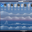

|  |
cyberdragon weather
if you want an accurate weather forecast, the only place to go is the National Weather Service - every other weather service pales in comparison when it comes to accuracy. however, their website is a bit clunky and doesn't show as much information as i'd like on a single page, so i wrote my own frontend for the NWS forecast data that displays it in a much more concise and readable format. cyberdragon weather lets you either use your device's location services to show the forecast for your local area, or type in a city or address to see the weather for a specific location instead. your location entry (whether manually searched for or found via location services) is saved to the query string in the URL, so you can bookmark the page to quickly access the forecast for a specific location. |
|
ikea shopping trip planner
i love ikea, but their website really sucks for planning shopping trips. it never tells you all the information you need to actually locate an item, plus there's so much whitespace that only like 2 items in your shopping list can fit on a phone screen at a time! i got so annoyed by this that i wrote my own shopping list frontend for ikea's website. just select your local ikea store, enter the URL or article number for every item you're interested in, and they'll all be displayed on an efficient, easy-to-read HTML table that shows exactly where they're located and how many are left in stock. plus, all your items get saved to the query string in the URL, so you can just bookmark the page for easy access to your shopping list, and you can quickly switch between different stores to check which one has your items in stock! |